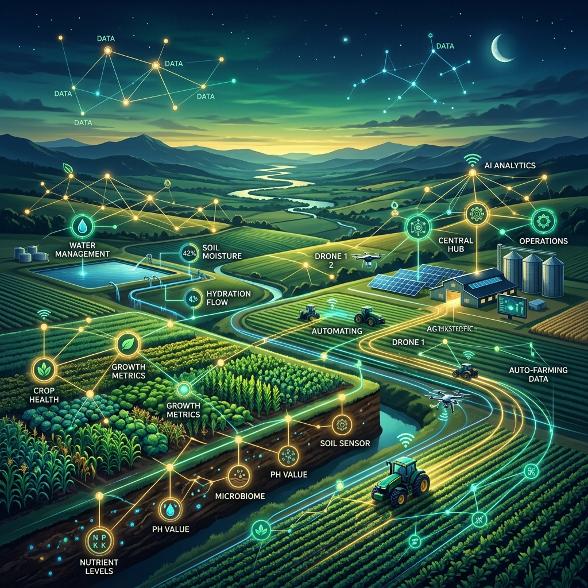

Most smart irrigation systems are built as simple products—a collection of sensors, a controller, and an app. Oriva, however, is being built as something much larger: a platform layer for agricultural intelligence. This distinction is subtle, but it is what allows us to scale beyond the limits of traditional hardware.
From Device to Intelligence Layer
Typical systems are hardware-centric. If you want more data, you buy more hardware. Oriva is decision-centric. We focus on the underlying intelligence that interprets environmental data, which makes our platform hardware-agnostic in the long term.
This means Oriva’s intelligence can eventually scale to integrate with other farm decisions, not just irrigation. We are building the "brain" of the farm, not just the hands.
Beyond Irrigation: The Future Scope
Because Oriva focuses on soil behavior, environmental response, and crop interaction, its core logic can expand into:
- Fertigation Decisions: Knowing exactly when and how much fertilizer to apply for maximum uptake.
- Crop Stress Prediction: Detecting signs of stress days before they are visible to the human eye.
- Yield Optimization: Analyzing seasonal patterns to predict and improve final harvest weights.
The Data Compounding Advantage
Unlike generic systems that treat every day as Day 1, Oriva builds field-specific datasets over time. It learns the seasonal patterns and crop performance nuances of your specific land. This creates a compounding effect: the longer you use Oriva, the more accurate and personalized your farming intelligence becomes.
Strategic Positioning for Scalability
This positions Furrowa not as a "device company" or a "sensor company," but as decision infrastructure for agriculture. Our intelligence layer can scale across different crops, geographies, and irrigation methods without needing to redesign the core engine every time.
Long-Term Impact: The Digital Twin
The final goal is to create farm-level "digital twins"—predictive models that allow farmers to simulate different decisions before they act. AI-driven farming ecosystems are no longer a dream; they are being built right now, layer by layer.
Most systems aim to optimize water usage. Oriva aims to optimize decision-making in farming itself. That is a much bigger vision, and it is the future we are building at Furrowa.